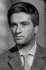

Also known as:5 tombe per un medium (original title)
Country:Italy, 85 minutes
Spoken languages:Italian
Genres:Horror, Mystery
Director(s):Massimo Pupillo
Writer(s):Romano Migliorini, Roberto Natale
Video Codec:Unknown
Number: 3079


Certification:NR
Storyline:
An attorney arrives at a castle to settle the estate of its recently deceased owner. The owner's wife and daughter reveal that he was someone who was able to summon the souls of ancient plague victims and, in fact, his spirit was roaming the castle at that very moment. Soon occupants of the castle begin to die off in gruesome, violent ways.
Cast: 

Medium: Original DVD,
Comments: Part of: Horror Classics - 100 Movie Pack
Loaned: No
Aspect ratio: Unknown